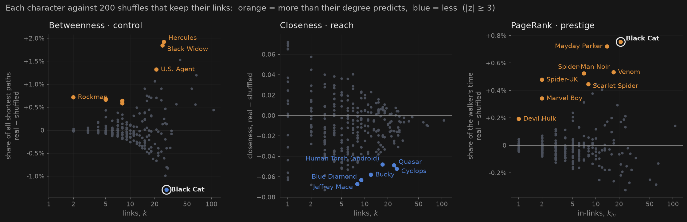
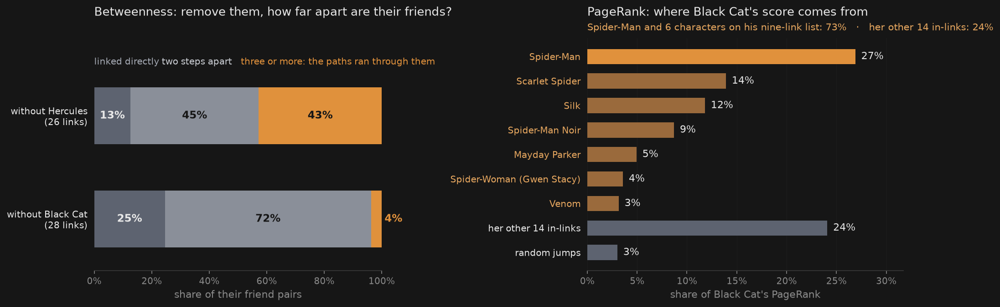

- 1.75×Black Cat's prestige is borrowed. Her PageRank is 1.75× what her links predict, and Spider-Man's one link is 27% of it.
- 0.36×But nobody's path runs through her. She has a third of the betweenness her degree predicts: 24 of her 28 friends are Spider-Man's too.
- 6 of 8Spider-Man's vote is what prestige is made of. Six of the eight PageRank surprises are among the nine characters his page links to.
- 0Nobody is surprisingly close to everyone. Six are surprisingly far, four of them from the same wartime years.
What we asked
Spider-Man tops every centrality in Marvel. That isn't news: a character with 106 links is bound to sit near everyone and on everyone's paths. The course's habit is to ask compared to what? So we asked: who is the most surprising character by any centrality, once their links are accounted for?
Four questions, four answers
Closeness and betweenness are built from distances, so they use the 277 connected characters with direction ignored. PageRank follows the arrows, so it uses all 303. The four mostly agree: their rank correlations with degree are 0.85 for closeness, 0.91 for betweenness and 0.94 for PageRank (against in-links). A high score is not a finding until we know what the character's links alone would have given them.
Compared to what: one shuffle per measure
- Closeness and betweenness: week 2's shuffle. Swap A–B, C–D into A–D, C–B, ten times per link. Every character keeps their number of links; who they link to is scrambled.
- PageRank: the directed version. Every character keeps both their in-links and their out-links, because what you receive depends on how many pages link to you, and what each of those pages can give depends on how many others it links to.

Pick two named characters: who should win, and who does?
"Should win" is whoever the 200 shuffles give more, which is what their links alone predict. "Wins" is the real value. When those differ, it's an upset, and the upset is the finding.
Avatars are our own quick sketches in costume-inspired colours, not official art.
Brokers, doors, and one character nobody needs
The brokers. Hercules, Black Widow and U.S. Agent carry about twice the shortest paths their links predict: Hercules has 3.74% of all shortest paths against 1.82% in the shuffles. They connect parts of Marvel that don't otherwise touch.
The doors. Rockman has the biggest \(z\) in the network, +13.4, and 73× his shuffled value. But his only other neighbour, The Witness, has one link, so all 275 of The Witness's shortest paths go through Rockman. That is his whole score. The shuffles usually attach The Witness to a hub instead, so Rockman's baseline is almost zero, and dividing by almost zero is what inflates his \(z\) and his ratio. By excess, he carries 0.71 percentage points extra against Hercules's 1.92. Four more small "doors" (Nightmask, Turbo, Guardsman, Genis-Vell) work the same way.
The one below. Black Cat has 28 links and a third of the betweenness they predict (\(z = -3.1\)). She is the only character in Marvel whose position is worth less than their links.
Nobody is surprisingly close
Six characters are surprising, and all six are further from everyone than their links predict: Jeffrey Mace, Blue Diamond, Bucky, Cyclops, Quasar and the android Human Torch. Closeness is hard to be surprising at. It averages 276 distances, and the number of links mostly settles them, so even these six sit at 0.83–0.89× their shuffled value. Why these six? We come back to that at the end.
Prestige is one vote from the right page
Eight characters have more PageRank than their links predict, and none has less. Six of the eight are on Spider-Man's list. His page links to only nine characters, so each link carries a ninth of the biggest PageRank in the network: 0.0047, the most valuable single link in Marvel. It makes up 27–77% of these six characters' scores. The other two work the same way, with a vote from a page that links to very few others: Marvel Boy's from Quasar (3 out-links), Devil Hulk's from the Hulk (10).
The directed shuffle keeps how many links each page gives and receives, but not which page links to whom. In PageRank, that is the whole point.
Black Cat: two verdicts, one cause
Black Cat is the only character on two lists, and in opposite directions:
5th in Marvel, 17th by in-links
0.71% of paths vs 2.01% shuffled
Each measure has a mechanism we can look at directly. Betweenness counts the paths that need you: remove the character and see how far apart their friends end up. PageRank counts votes: split her score into the vote of every page that links to her, plus the walker's random jumps.

- No roads. 24 of her 28 friends are also Spider-Man's, so they reach each other through him. Remove her and only 4% of her friend pairs are three or more steps apart, against 43% for Hercules.
- The vote. Spider-Man's single link is 27% of her PageRank, twice the next-biggest vote, and the next votes come from his list too. Spider-Man and six of the characters he links to give her 73% of her score, from 7 of her 21 in-links.
Spider-Man's neighbourhood makes her redundant as a road; his page makes her prestigious.
The far ones live in their own decade
Why are the six closeness surprises so far out? Part 7's mixing measures ask who links to whom, and we test them the same way, compared to what:
That explains four of the six. Jeffrey Mace, Blue Diamond, Bucky and the android Human Torch debuted in 1939–41, and 52% of their neighbours come from the 1930s–40s, against 8% of all characters. They live in a closed wartime corner of the network.
It isn't simply that they miss Spider-Man. None of the six links to him, while the shuffles link them to him 38–68% of the time, yet even in the shuffles where they miss him too, their closeness drops only 16–28% of the way to the real value. The rest is where their neighbours sit. For Cyclops and Quasar, the decade can't say where that is.
Putting it together
Most of Marvel's centrality is just links: the four measures agree with degree, and Spider-Man's 23% of all shortest paths is what 106 links buy in the shuffles too (\(z = +0.5\)). The surprises are about who the links connect, and in Marvel that mostly means Spider-Man. His vote makes prestige, and his neighbourhood makes other characters' roads unnecessary. Black Cat gets both.
Black Cat has Spider-Man's vote, not his roads.
What surprised us
- The biggest \(z\) was the least interesting result. Rockman's +13.4 is one leaf's paths. Without the excess, he would have been our headline.
- Every PageRank surprise has the same cause: one vote from a page that links to few others. We expected several stories and found one.
Choices we made
Each could have gone the other way and changed a number above.
- |z| ≥ 3 for whether, excess for how much Ranking by z, or by real ÷ shuffled, would have crowned Rockman (73×): a near-zero baseline inflates both.
- One null per measure Undirected swaps for the path measures, directed swaps keeping in- and out-links for PageRank, which lives on the arrows.
- 277 connected characters for paths, all 303 for PageRank Distance is undefined between components; PageRank's random jumps handle the unreachable pages.
- 200 shuffles each, fixed seeds The undirected set reuses exercise 3.8's seeds and reproduces its z-scores exactly; the directed set has its own.
- Debut decade from the live Wikipedia infoboxes Found for 284 of 303 characters. Pages that have since become redirects count as unknown, so no character inherits a team page's debut.
What we can't conclude
- That Black Cat matters less in the comics. This is a map of how Wikipedia's editors link articles, not of the stories (week 1).
- That her prestige is undeserved. PageRank is built to reward exactly this kind of vote.
- Why Cyclops and Quasar are far. The decade can't see their groups; finding groups is what week 4 is for.
Reproducing this
Notebooks/Week3/SGI-3.12.ipynb runs on the frozen week 1 data in Data/Week1/ in about 70 seconds, plus seven calls to the Wikipedia API for the debut years. It makes both figures and writes stats.json, which every number on this page comes from, and a final check pins 24 of them so it fails loudly if anything drifts.
Concepts
Quick reminders of the week's ideas, grouped as in the concept list. The ↩ link on each card takes you back to where you were reading.
Used here
Degree (in / out)
A character's number of links. With arrows, in-degree counts the pages that link to you and out-degree the pages you link to. Here degree is the baseline every other measure is judged against.
↩ Back to where you wereShortest path & distance
A shortest path joins two characters with the fewest links, and its length is their distance. Closeness and betweenness are both built from these paths, which is why they need a connected network.
↩ Back to where you wereCloseness
One over a character's mean distance to everyone: high means everything is near. On this page nobody is surprisingly close, because a character's links already settle most of their distances.
↩ Back to where you wereBetweenness
The share of all shortest paths between other characters that pass through you: a measure of control. It singles out brokers like Hercules, and characters nobody's path needs, like Black Cat.
↩ Back to where you werePageRank
A random walker follows out-links and sometimes teleports to a random page, so it never gets stuck. PageRank is the share of time it spends on you; links count most from important pages with few out-links.
↩ Back to where you wereGiant component
The largest group of characters that can all reach each other: 277 of the 303 when direction is ignored. Closeness and betweenness use it because distance is undefined between separate groups.
↩ Back to where you wereRank correlation
How similarly two measures order the characters, from −1 to 1, where 1 is the same ranking. Every measure here ranks close to degree, which is why a high score alone isn't a finding.
↩ Back to where you wereDegree-preserving shuffle
A null model: rewire the network at random while every character keeps their number of links (for PageRank, their in- and out-links). What survives the shuffle is explained by degree; what doesn't is real structure.
↩ Back to where you werez-score & excess
The z-score counts how many standard deviations the real value sits from the shuffles, which says whether a difference is real. The excess, real minus shuffled, says how big it is. Rockman is why we need both.
↩ Back to where you wereDegree assortativity
The correlation between the degrees at the two ends of each link: positive when hubs link to hubs, negative when hubs link to small characters. Marvel is negative, but so are its shuffles.
↩ Back to where you wereHomophily
Like linking to like on some attribute, here the decade of a character's first comic. It's tested by shuffling the labels and keeping the links, and it explains why the WWII-era characters sit far out.
↩ Back to where you wereAlso this week
Breadth-first search
The ring-by-ring algorithm that finds every shortest path, so it computes all the distances behind closeness and betweenness.
↩ Back to where you wereDiameter & eccentricity
A character's eccentricity is their distance to the farthest character, and the diameter is the largest one: the same distances as closeness, summarised by the maximum instead of the mean.
↩ Back to where you wereHarmonic centrality
Closeness built from 1/distance, so unreachable characters count as 0 instead of breaking it. It would let closeness use all 303 characters.
↩ Back to where you wereEigenvector centrality
PageRank's ancestor: your score is the sum of your neighbours' scores, with no vote-splitting and no teleport. PageRank adds both to cope with directed links.
↩ Back to where you wereCliques
Groups where every pair is linked, the strictest definition of a group. Week 4's communities relax it, and may name the tight groups the closeness surprises live in.
↩ Back to where you were